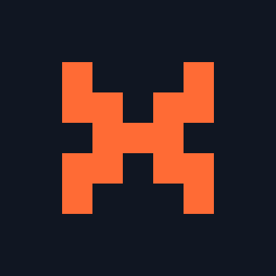
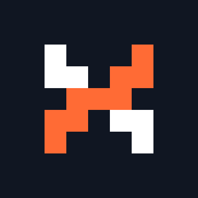
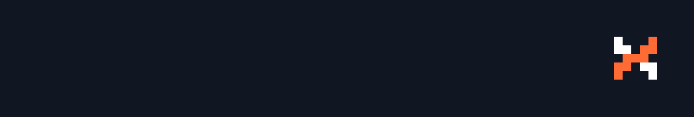
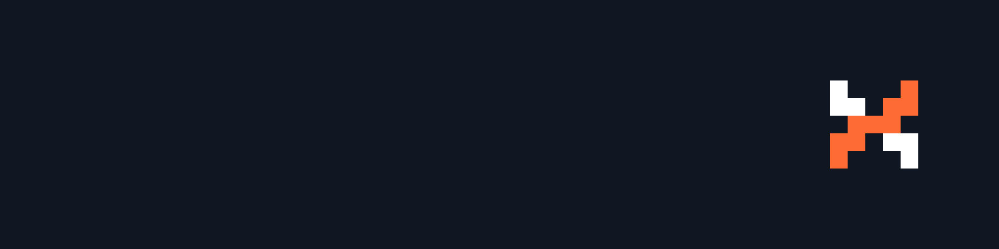
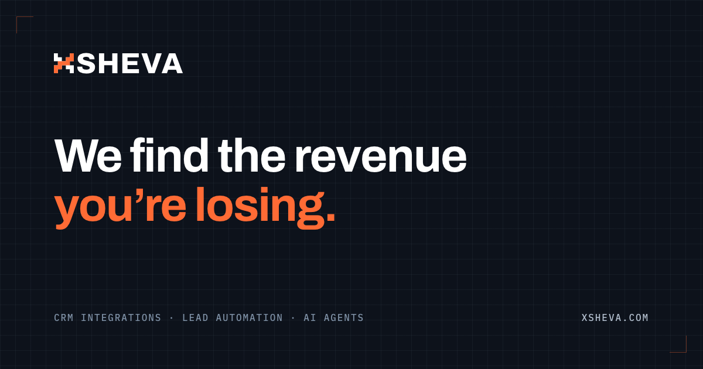
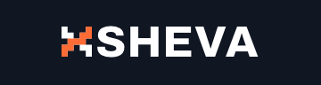
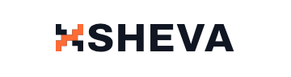
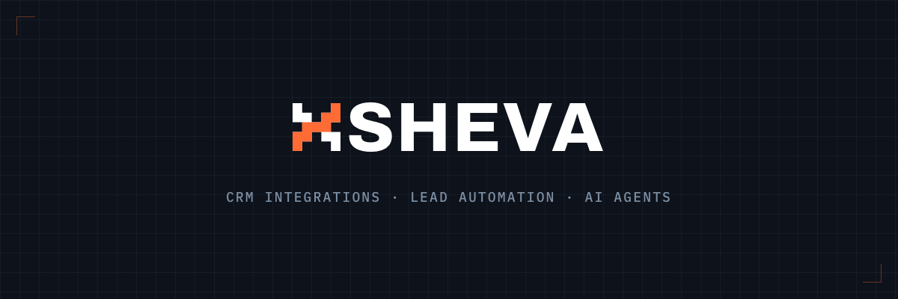
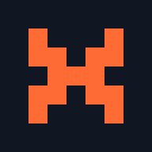
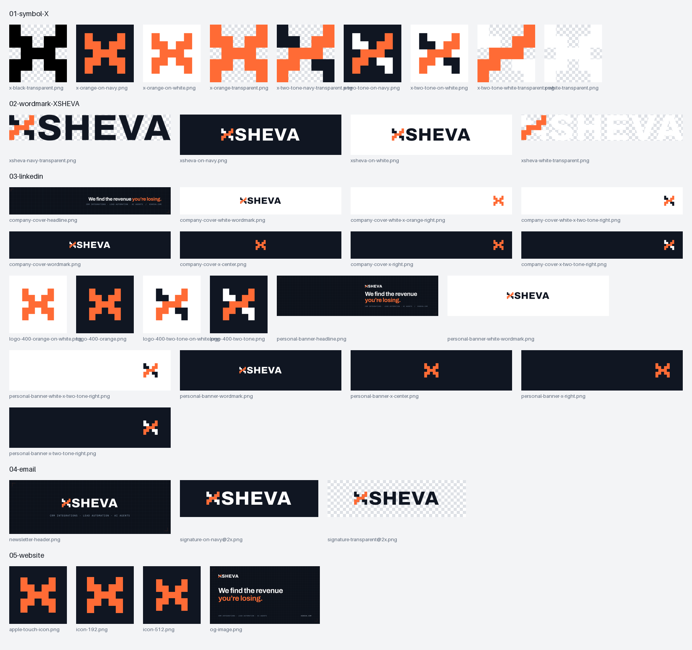

XSHEVA / BRAND KIT / A1 STEPPED X / 2026-09-30
כל הקבצים בתיקייה docs/brand/, באותו מבנה כמו החבילה ב-Downloads. כל תמונה יוצאה במידות המדויקות של הפלטפורמה ונבדקה בעין. כל הגרסאות בתמונה אחת: 00-preview.png (בתחתית הדף).
כלל הצבע: בגדלים קטנים (favicon, תמונת פרופיל, אייקון) הסמל הוא X כתום מלא. ליד המילה SHEVA ובגדלים גדולים, כמו כיסוי LinkedIn, הוא דו-גוני: המדרגה העולה בכתום, והשאר בצבע המילה. רקע לבן: למסמכים, הצעות מחיר ומצגות. ב-LinkedIn נשארים בנייבי, כי כיסוי לבן נבלע בעמוד הלבן.
למה: בגודל של תמונת פרופיל, X כתום מלא נקרא מיד. הפיצול לשני צבעים נקרא טוב רק כשהמילה לידו.

Company page ← Edit page ← Logo. אותו קובץ משמש גם כתמונת הפרופיל ב-Gmail.

לא מומלץ כתמונת פרופיל: בגודל קטן נקרא כחלקים נפרדים. שמרתי למקרה שתעדיף אותה.

Company page ← Edit page ← Cover image. X דו-גוני (לבן + מדרגה כתומה) בצד ימין, בלי טקסט. זה הכיסוי שעלה לעמוד החברה. עוד 7 גרסאות (במרכז, עם XSHEVA, על לבן) ב-03-linkedin/.

הפרופיל שלך ← עיפרון על הבאנר. X דו-גוני בצד ימין, מול תמונת הפרופיל שלך בצד שמאל. עוד 6 גרסאות ב-03-linkedin/.

עולה לאתר כ-og:image. אחרי העלאה: LinkedIn Post Inspector כדי לרענן את התצוגה המקדימה.

רקע נייבי משלו, ולכן עובד גם במצב כהה של Gmail. מוצג ב-180×48.

רק לרקע בהיר. במצב כהה המילה הנייבית נעלמת.
חתימה מוכנה: 04-email/email-signature.html
פותחים בדפדפן, בוחרים הכול, מעתיקים ל-Gmail ← Settings ← Signature. התמונה נטענת מ-xsheva.com, ולכן עובדת רק אחרי שהאתר יעלה עם הקבצים החדשים. לא הוספתי תפקיד, כי לא מצאתי אחד מתועד.


ה-favicon בנוי על רשת של 16 יחידות, כך שכל קצה נופל על פיקסל שלם ב-16, 32 ו-48px. גם favicon.ico מכיל את שלושת הגדלים.
| נושא | כלל |
|---|---|
| מרווח נקי | לפחות תא אחד מסביב (חמישית מרוחב הסמל). |
| גודל מינימלי | 16px למסך. מתחת לזה לא משתמשים. |
| צבעים | #FF6B35 כתום #101622 נייבי #FFFFFF לבן |
| פונט המילה | Archivo ExtraBold (800), ריווח +0.02em. רישיון SIL OFL, מותר ללוגו. |
| אסור | לסובב, להטות, להוסיף צל או גרדיאנט, לצבוע את המדרגה בצבע אחר, להשתמש בגרסה הדו-גונית לבד כתמונת פרופיל. |
01-symbol-X/svg/: xsheva-mark.svg (דו-גוני לרקע בהיר), -reversed (דו-גוני לרקע כהה), -orange, -black, -white, -tile (על ריבוע נייבי).
